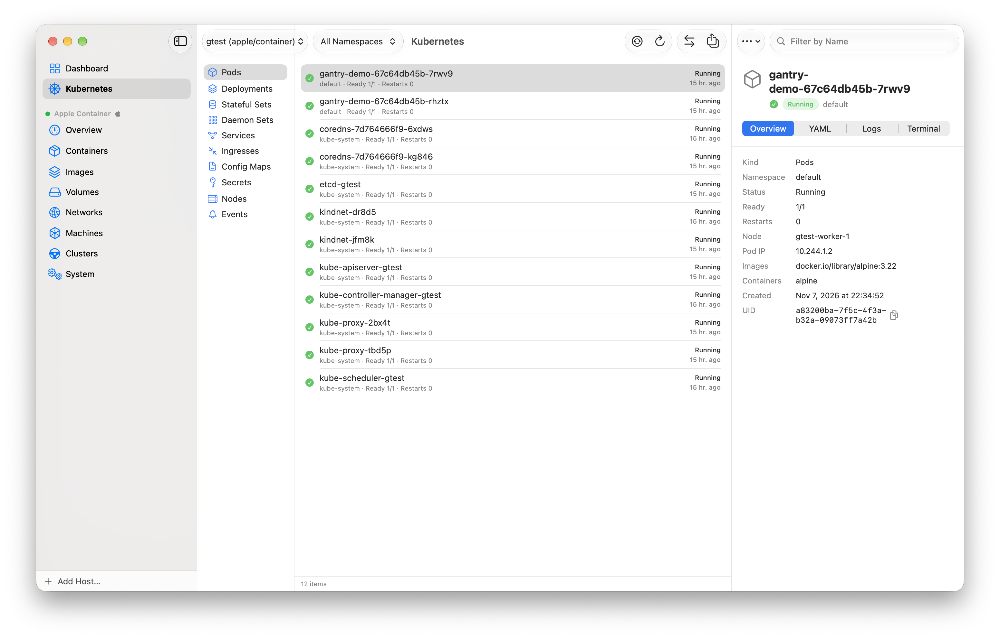

Η εφαρμογή Mac για το Apple container και το Docker
Το Gantry είναι μια δωρεάν, ανοιχτού κώδικα εφαρμογή Mac για το εργαλείο container της Apple και για το Docker, τοπικά και μέσω SSH. Εκτελέστε κοντέινερ, cluster Kubernetes, μηχανήματα και έργα Compose στο apple/container από ένα παράθυρο, δίπλα στους host Docker σας. Μια δωρεάν εναλλακτική του Docker Desktop και του OrbStack για Mac.
Gantry 0.29.0 · macOS 26+ · Apple silicon και Intel · Άδεια MIT · 28 γλώσσες · Με διακομιστή MCP

Από την εντολή στο στοιχείο ελέγχου
Το εργαλείο container της Apple και το Docker είναι εργαλεία γραμμής εντολών. Κάθε εντολή σε αυτόν τον πίνακα έχει ένα στοιχείο ελέγχου στο Gantry.
- container
- docker
- docker compose
- kubectl
| Εντολή | Στο Gantry |
|---|---|
container run, container create | Φύλλο «Νέο κοντέινερ» και Γρήγορη εκτέλεση: εικόνα, όνομα, εντολή, θύρες, περιβάλλον, τόμοι, τομέας DNS, προσαρμοσμένος πυρήνας και ορίσματα εκκίνησης· η Επικόλληση εντολής… διαβάζει μια γραμμή docker run ή container run |
container logs | Καρτέλα «Αρχεία καταγραφής»: ζωντανή παρακολούθηση, αναζήτηση regex, φίλτρο επιπέδου, χρώματα ANSI· η Εξαγωγή αρχείων καταγραφής… αποθηκεύει τις ορατές γραμμές |
container stats | Καρτέλα «Στατιστικά», sparklines στον πίνακα ελέγχου στόλου και ο πίνακας «Χρήση πόρων» |
container exec | Καρτέλα «Τερματικό» (διαδραστικό shell) και καρτέλα «Διεργασίες» |
container image pull, tag, delete, prune, inspect | Εικόνες: λήψη με πρόοδο, ετικέτα, αφαίρεση, εκκαθάριση, επιθεώρηση· Σάρωση για ευπάθειες… με Trivy ή Grype |
container build | Δομεί τις υπηρεσίες build: ενός αρχείου Compose· η ενότητα Δομήσεις δείχνει τις δομήσεις που ξεκίνησε το Gantry |
container cluster create, list, delete, write-config, load-image | Cluster: cluster Kubernetes, μεγέθη worker και κοινή αποθήκη εικόνων (1.7), κόμβοι, kubeconfig, Περιήγηση στους πόρους, Φόρτωση στο cluster (1.5 και 1.6) |
Δεν υπάρχει εντολή compose | Εκτέλεση Compose: σηκώστε ένα docker-compose.yml από το Finder, το μενού «Αρχείο» ή με μεταφορά και απόθεση |
Λειτουργίες
Κάθε περιοχή της εφαρμογής, με τις εντολές που αντικαθιστά.
- ΚοντέινερΔημιουργία, εκτέλεση, άνοιγμα και αλλαγή κοντέινερ σε κάθε host.
container run · docker exec -it - Εικόνες και δομήσειςΛήψη, δόμηση, σάρωση και αφαίρεση εικόνων.
docker build · trivy image - ComposeΕκτελέστε ένα
docker-compose.ymlστο Docker ή στο apple/container. Δημιουργήστε ένα από κοντέινερ που εκτελούνται.docker compose up -d - KubernetesΠεριήγηση σε κάθε context του kubeconfig ή δημιουργία cluster με το apple/container.
kubectl logs -f - Host και στόλοςΑυτό το Mac, οι host Docker μέσω SSH και το apple/container σε έναν πίνακα ελέγχου.
docker -H ssh://user@host - Αρχεία καταγραφής και αποτυχίεςΑνάγνωση, αναζήτηση και εξαγωγή αρχείων καταγραφής. Εύρεση της αιτίας όταν ένα κοντέινερ αποτυγχάνει.
docker logs -f - macOSΗ γραμμή μενού, οι ειδοποιήσεις, το Spotlight, οι Συντομεύσεις και το πληκτρολόγιο.
⌘K · ⇧⌘E - Πράκτορες AIΈνας ενσωματωμένος διακομιστής MCP δίνει στο Claude και σε άλλους πράκτορες τα ίδια στοιχεία ελέγχου.
claude mcp add gantry



Το εγγενές GUI του macOS για το Apple container
Το εργαλείο container της Apple εκτελεί κοντέινερ Linux ως ελαφριές VM σε Apple silicon, αλλά διατίθεται μόνο ως εργαλείο γραμμής εντολών. Το Gantry είναι η εφαρμογή γραφείου του: ό,τι είναι το Docker Desktop για το Docker, είναι το Gantry για το container. Υποστηρίζει κάθε CLI container από 1.0 έως την προτεινόμενη 1.7.1 και ενεργοποιεί κάθε λειτουργία μόνο όταν την υποστηρίζει το εγκατεστημένο CLI σας.
- container system start
- container machine
- container builder start
Εκδόσεις
- 0.29.0 · 0.28.0Όλος ο στόλος σε έναν πίνακα και ασφαλέστερες εικόνεςΟι εκδόσεις 0.28.0 και 0.29.0 του Gantry προσθέτουν έναν πίνακα δραστηριότητας για όλους τους host, ιστορικό δομήσεων, σαρώσεις εικόνων με Trivy ή Grype, μυστικά της Κλειδοθήκης για το περιβάλλον των κοντέινερ και εξαγωγή σε Compose. Μπορείτε να εξαγάγετε αρχεία καταγραφής με το φίλτρο σας, να δώσετε ένα στιγμιότυπο οθόνης στην «Επεξήγηση αποτυχίας» και να παρακολουθείτε λήψεις, δομήσεις και εκτελέσεις Compose στη γραμμή μενού.
- 0.27.0Kubernetes, Apple Intelligence και το υπόλοιπο macOSΤο Gantry 0.27.0 προσθέτει περιηγητή Kubernetes, εξηγεί τα κοντέινερ που απέτυχαν με το Apple Intelligence και συνεργάζεται με Spotlight, Siri, widget και Κέντρο ελέγχου. Υποστηρίζει το apple/container 1.7.1 και έχει νέο σχεδιασμό που ακολουθεί τις Human Interface Guidelines της Apple.
Εγκατάσταση
Κατεβάστε την εφαρμογή ή εγκαταστήστε την με το Homebrew. Δεν χρειάζεστε λογαριασμό.
- brew install --cask getgantry/tap/gantry
- ΕγκατάστασηΕκτελέστε το Homebrew cask ή κατεβάστε το
.zipαπό τις Εκδόσεις και σύρετε τοGantry.appστις Εφαρμογές. - Πρώτη εκκίνησηΔεν είναι ακόμη επικυρωμένο (notarized) — κάντε δεξί κλικ και «Άνοιγμα» ή αφαιρέστε την καραντίνα με
xattr -dr com.apple.quarantine /Applications/Gantry.app - Προσθήκη hostΤο τοπικό Docker εμφανίζεται μόνο του. Για το Apple container, προσθέστε έναν host Apple Container· το Gantry προσφέρεται να εγκαταστήσει το CLI
container. Για πράκτορες AI:claude mcp add gantry.
Ερωτήσεις
Είναι το Gantry δωρεάν;
Ναι. Το Gantry είναι δωρεάν και ανοιχτού κώδικα, με άδεια MIT. Δεν υπάρχει συνδρομή, λογαριασμός ή όριο στον αριθμό των host ή των κοντέινερ.
Τι χρειάζομαι για να τρέξω το Gantry;
macOS 26 ή νεότερο σε Apple silicon ή Intel, καθώς και έναν daemon του Docker (Docker Desktop, OrbStack, Colima ή παρόμοιο) ή το εργαλείο container της Apple. Το ίδιο το apple/container απαιτεί Apple silicon, οπότε σε Mac με Intel το Gantry διαχειρίζεται μόνο host Docker.
Ποιο είναι το καλύτερο GUI για το Apple container;
Το Gantry είναι ένα δωρεάν, ανοιχτού κώδικα εγγενές GUI macOS για το εργαλείο container της Apple (apple/container). Καλύπτει τον κύκλο ζωής των κοντέινερ, τα αρχεία καταγραφής, τα στατιστικά και ένα τερματικό exec, καθώς και τα μέρη του CLI που δεν φτάνουν άλλα GUI: cluster Kubernetes (container cluster), μηχανήματα container, τον builder εικόνων, συνδέσεις σε μητρώα, πυρήνες, αρχεία καταγραφής υπηρεσιών και ιδιότητες συστήματος. Υποστηρίζει CLI 1.0 έως 1.7.1 και ενεργοποιεί κάθε λειτουργία μόνο όταν την υποστηρίζει το CLI σας. Δείτε τον οδηγό apple/container.
Τι είναι το Apple container (apple/container);
Το apple/container είναι το εργαλείο ανοιχτού κώδικα της Apple για την εκτέλεση κοντέινερ Linux σε Mac. Κάθε κοντέινερ εκτελείται στη δική του ελαφριά εικονική μηχανή, πάνω στο Virtualization framework της Apple. Απαιτεί Mac με Apple silicon και διατίθεται ως εργαλείο γραμμής εντολών με το όνομα container, χωρίς εφαρμογή γραφικού περιβάλλοντος. Το Gantry προσθέτει αυτή την εφαρμογή.
Μπορώ να χρησιμοποιήσω docker compose με το Apple container;
Ναι. Το apple/container δεν έχει εντολή compose, οπότε το Gantry κάνει την ενορχήστρωση μέσω του CLI container: δομεί τις υπηρεσίες με build:, δημιουργεί το δίκτυο του έργου και τους ονομασμένους τόμους και ξεκινά κάθε υπηρεσία με τη σειρά του depends_on, με τις τυπικές ετικέτες του Compose. Τα ονόματα υπηρεσιών επιλύονται μέσω ψευδωνύμων DNS δικτύου. Ανοίξτε ένα docker-compose.yml από το Finder, το μενού «Αρχείο» ή σύροντάς το στο παράθυρο.
Είναι το Gantry εναλλακτική του Docker Desktop, του OrbStack ή του Podman Desktop;
Ως GUI, ναι. Το Gantry είναι μια δωρεάν, εγγενής εφαρμογή macOS για τη διαχείριση κοντέινερ, εικόνων, τόμων, δικτύων, αρχείων καταγραφής και στατιστικών. Είναι πελάτης, όχι μηχανή: χρησιμοποιεί τον daemon του Docker που ήδη τρέχετε (Docker Desktop, OrbStack, Colima) ή το εργαλείο container της Apple, και προσθέτει προβολή πολλών host, host SSH και διακομιστή MCP. Δείτε τη σύγκριση.
Πώς εγκαθιστώ το Gantry;
Εκτελέστε brew install --cask getgantry/tap/gantry ή κατεβάστε την πιο πρόσφατη έκδοση από το GitHub και σύρετε το Gantry.app στον φάκελο «Εφαρμογές».
Μπορούν πράκτορες AI να ελέγχουν το Gantry;
Ναι. Το Gantry περιλαμβάνει διακομιστή MCP και App Intents του macOS, ώστε το Claude, οι Συντομεύσεις, η Siri και τα σενάρια να έχουν την ίδια πρόσβαση με το GUI σε κάθε host, και σε host SSH: κοντέινερ, εικόνες, τόμους, δίκτυα, Compose, μηχανήματα apple/container, cluster Kubernetes, εργαλεία συστήματος apple_* (υπηρεσίες, builder, μητρώα, ιδιότητες, αρχεία καταγραφής, πυρήνας) και κοινή χρήση θυρών. Σε macOS 26 και νεότερο, η Επεξήγηση αποτυχίας… ρωτά επίσης το Apple Intelligence γιατί απέτυχε ένα κοντέινερ. Προσθέστε τον διακομιστή MCP με claude mcp add gantry -- /Applications/Gantry.app/Contents/Resources/gantry-mcp.